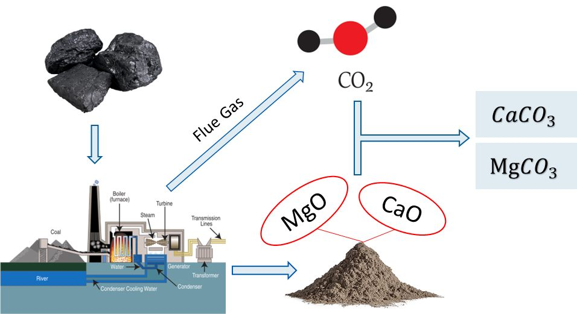
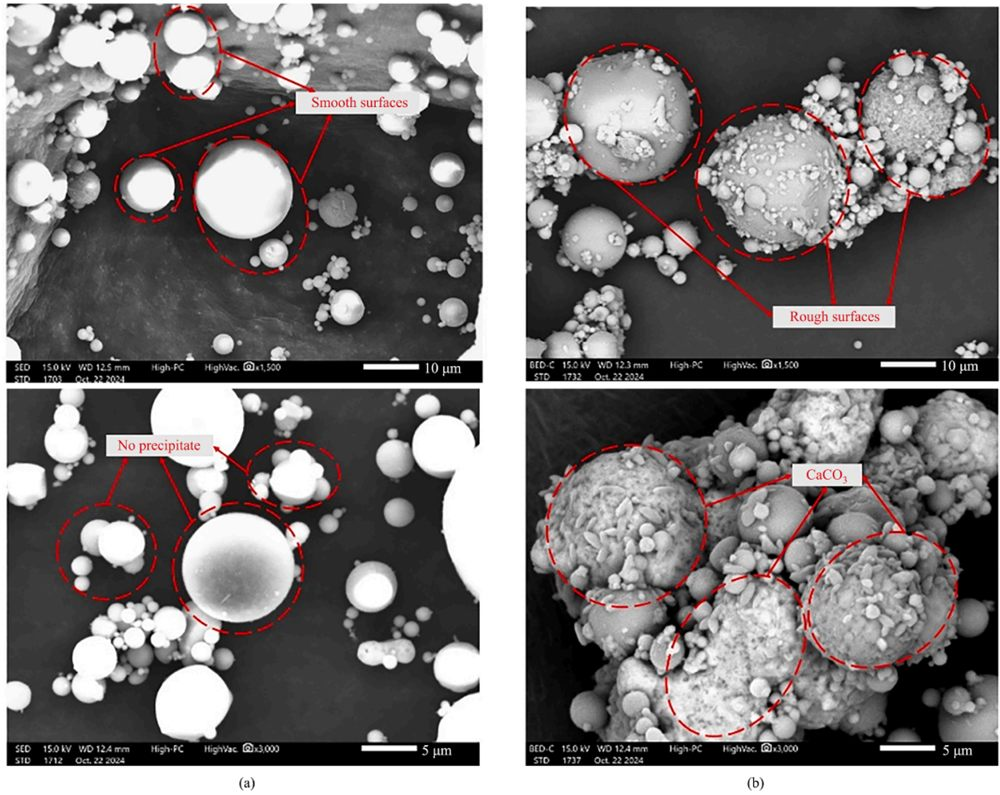
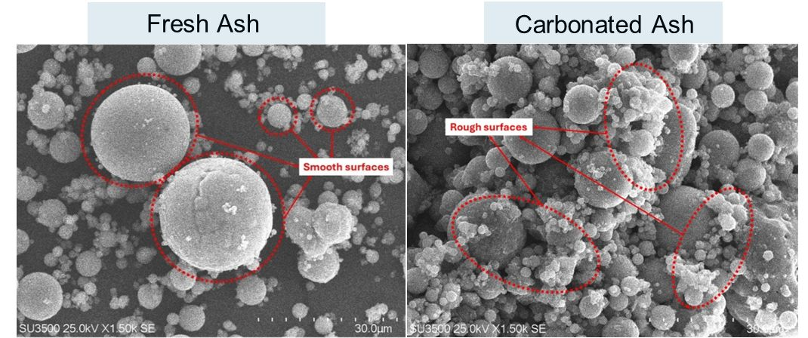
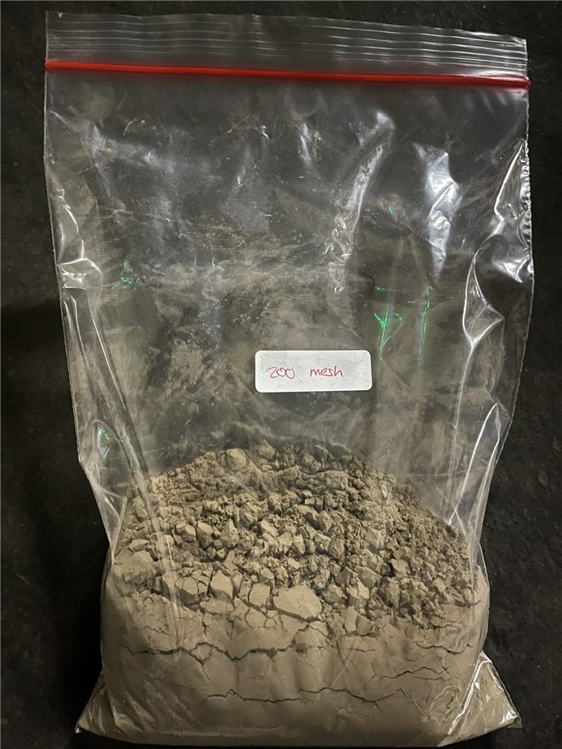
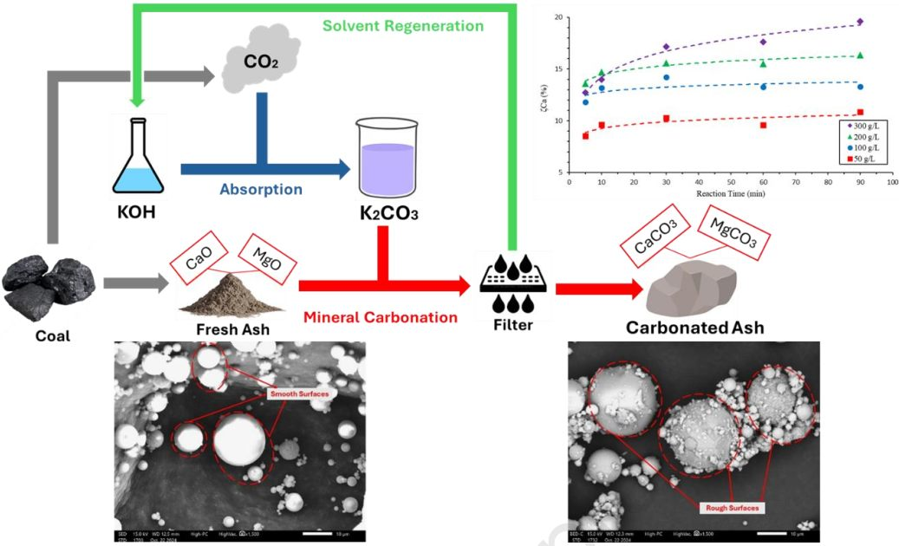
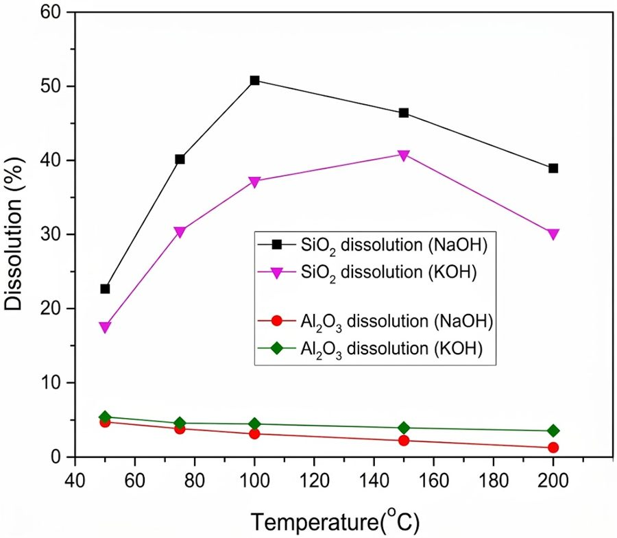
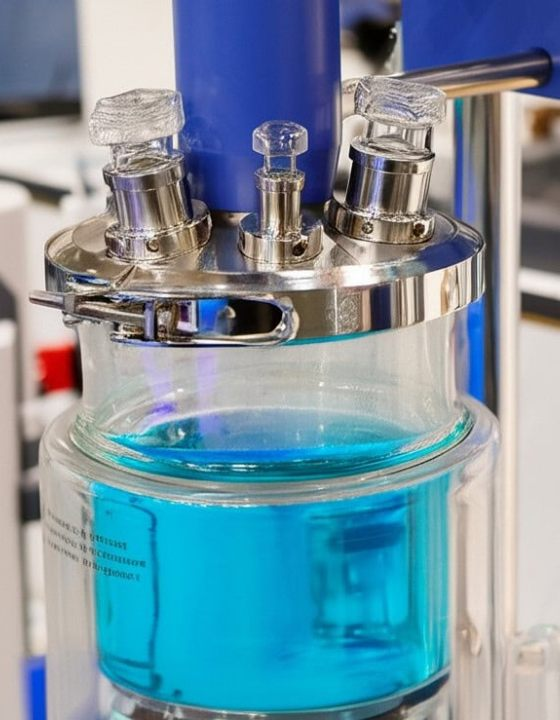
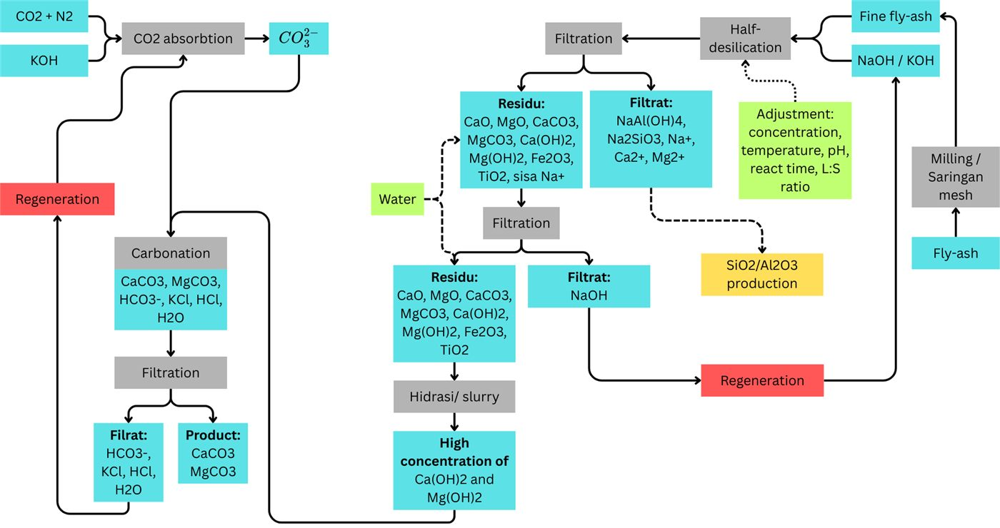
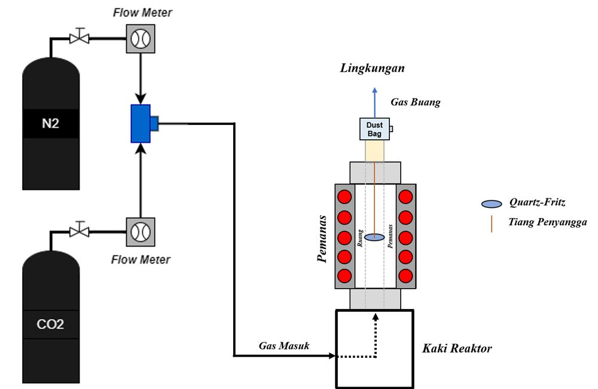
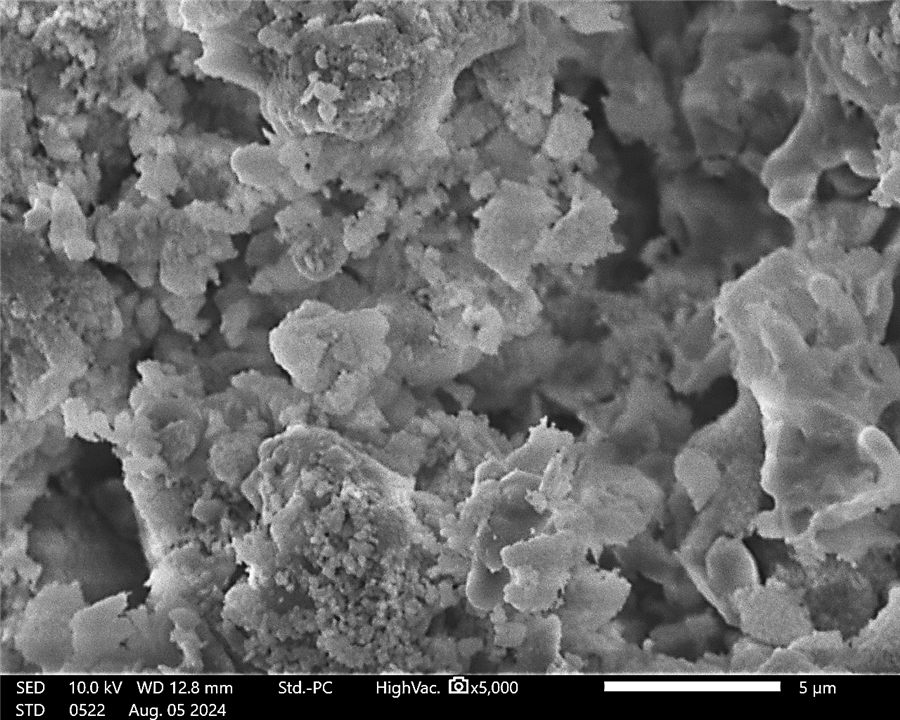

Carbon Mineralization & UtilizationMineralisasi & Pemanfaatan Karbon炭素鉱物化・利用
Turning CO₂ and industrial by-products such as coal fly ash into stable carbonates, permanently and with value.Mengubah CO₂ dan produk samping industri seperti fly ash batubara menjadi karbonat stabil, secara permanen dan bernilai.CO₂と石炭フライアッシュなどの産業副産物を、恒久的かつ価値ある安定な炭酸塩に変えます。
What we studyApa yang kami teliti研究内容
A power plant waste that stores CO₂Limbah pembangkit yang menyimpan CO₂CO₂を貯留する発電所の廃棄物
Indonesian coal fly ash contains on average about 14 wt.% CaO. Contacted with CO₂ in water, the calcium precipitates as calcite (CaCO₃), as confirmed by XRD and the disappearance of free CaO. SEM shows smooth fresh spheres turning into rough carbonate-coated particles. The work is a long-running collaboration with Prof. Tomohiro Nozaki at the Institute of Science Tokyo.Fly ash batubara Indonesia rata-rata mengandung sekitar 14% berat CaO. Ketika dikontakkan dengan CO₂ dalam air, kalsium mengendap sebagai kalsit (CaCO₃), dikonfirmasi oleh XRD dan hilangnya CaO bebas. SEM menunjukkan bola halus fly ash segar berubah menjadi partikel kasar terlapisi karbonat. Riset ini merupakan kolaborasi jangka panjang dengan Prof. Tomohiro Nozaki dari Institute of Science Tokyo.インドネシア産石炭フライアッシュは平均約14 wt.%のCaOを含みます。水中でCO₂と接触させるとカルシウムが方解石（CaCO₃）として析出し、XRDと遊離CaOの消失で確認されます。SEMでは滑らかな球状粒子が炭酸塩に覆われた粗い粒子に変化します。東京科学大学 野崎智洋教授との長年の共同研究です。




Unlocking more calcium, closing the solvent loopMembuka lebih banyak kalsium, menutup siklus pelarutより多くのカルシウムを活用し、吸収液を循環
Silica and alumina shell the reactive calcium in fly ash. Alkaline desilication (NaOH, KOH; 15–25%, around 100 °C, 60–120 min) dissolves SiO₂ while Ca and Fe are enriched, measured by XRF over time. A KOH absorber then captures CO₂ as K₂CO₃, which the treated ash converts to CaCO₃ while regenerating KOH. The scheme is evaluated as a full plant with by-product valorization and carbon-credit scenarios.Silika dan alumina menyelubungi kalsium reaktif pada fly ash. Desilikasi alkali (NaOH, KOH; 15–25%, sekitar 100 °C, 60–120 menit) melarutkan SiO₂ sementara Ca dan Fe meningkat, diukur dengan XRF terhadap waktu. Absorber KOH kemudian menangkap CO₂ sebagai K₂CO₃, yang oleh abu terolah diubah menjadi CaCO₃ sambil meregenerasi KOH. Skema ini dievaluasi sebagai pabrik utuh dengan valorisasi produk samping dan skenario kredit karbon.フライアッシュ中の反応性カルシウムはシリカとアルミナに覆われています。アルカリ脱シリカ（NaOH・KOH、15–25%、約100 °C、60–120分）でSiO₂を溶解し、CaとFeが濃縮される様子をXRFで経時測定します。KOH吸収塔でCO₂をK₂CO₃として回収し、処理灰がこれをCaCO₃に変換してKOHを再生します。副産物の価値化とカーボンクレジットを含め、プラント全体として評価します。




CaO ⇄ CaCO₃ for cement and solar plantsCaO ⇄ CaCO₃ untuk semen dan pembangkit suryaセメント・太陽熱プラントのためのCaO ⇄ CaCO₃
In calcium looping, CaO captures CO₂ in a carbonator and releases it as a concentrated stream in a calciner. We study how particle size and gas concentration change carbonation, how morphology evolves over cycles, and how natural limestone sorbents perform when the calciner is driven by concentrated solar heat.Pada calcium looping, CaO menangkap CO₂ di carbonator dan melepaskannya sebagai aliran pekat di calciner. Kami meneliti pengaruh ukuran partikel dan konsentrasi gas terhadap karbonasi, perubahan morfologi selama siklus, dan kinerja sorben batu kapur alami saat calciner digerakkan panas surya terkonsentrasi.カルシウムルーピングでは、CaOが炭酸化炉でCO₂を吸収し、焼成炉で高濃度CO₂として放出します。粒径とガス濃度が炭酸化に与える影響、サイクルに伴う形態変化、集光太陽熱で焼成炉を駆動する場合の天然石灰石吸収材の性能を研究しています。


Researchers in this themePeneliti di tema iniこのテーマの研究者
Selected publicationsPublikasi terpilih主な論文
Related research projectsProyek riset terkait関連研究課題
Recent student thesesTesis mahasiswa terbaru最近の学位論文
Interested in this theme?Tertarik dengan tema ini?このテーマに興味がありますか？
See example topics for students, or talk to us about a joint project.Lihat contoh topik untuk mahasiswa, atau diskusikan proyek bersama.学生向けテーマ例を見る、または共同研究をご相談ください。